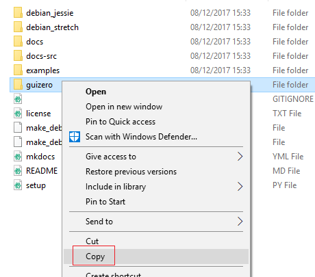

Installation
guizero is designed to allow children to quickly and easily create GUIs for their programs.
If you can download and unzip a file, you can install guizero - no special permissions or administrator rights are required.
If you have administrator rights and are connected to the internet, you can use pip to quickly install guizero.
guizero only requires tkinter to be installed, which is included with a standard Python installation on all platforms except Linux.
Easy installation
-
Go to the Github repo for guizero
-
Click the green "Clone or download" button and then "Download ZIP"

-
Unzip the file
-
Open the
guizero-masterfolder, then copy theguizerofolder and paste it into your home directory
-
That's it! When you write your guizero code, make sure you save it into your home directory.
Install using pip
Windows
- Make sure you have pip installed.
- Open a command prompt
- Type
pip install guizeroand press Enter
Raspberry Pi
- Open a terminal window
- Type
sudo pip3 install guizeroand press Enter
On Mac
-
Open a terminal (you can search for it in the Launch Pad)

-
Type
sudo pip3 install guizero
On Linux
- Open a terminal
- Install
tkinterusing your distribution's package manager, e.g.sudo apt install python3-tk - Install guizero using pip by typing
sudo pip3 install guizero